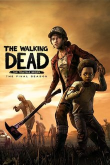

| Games | Customer Comments | Rate |
 |
Call Of Duty 4: Modern Warfare is the first ever Call Of Duty Game set in the modern era and day which is a massive step up in actual fact, the game is well executed and crafted in many different places and is arguably one of the best Call Of Duty Game ever made in history. The Game's Story is superb, well thought, planned and done story that is entertaining and intense. The gameplay is the most refined one yet introducing a wide range of new weapons and equipment for the player to use. The graphics are sharp and good looking which is another benefit. The game hardly has any bugs and there are so many great moments in the game. Trust Me, this game is faultless and is a perfect example of what a Call Of Duty game should be. |
Star Rating |
 |
Need for Speed: Most Wanted is a 2005 open world racing video game, and the ninth installment in the Need for Speed series. Developed by EA Canada and published by Electronic Arts, it was released on November 11, 2005, for PlayStation 2, Xbox, GameCube, Nintendo DS, Microsoft Windows, Game Boy Advance and Xbox 360. An additional version, entitled Need for Speed: Most Wanted 5-1-0, was released in the same year for PlayStation Portable. The game focus on street racing-oriented game play involving a selection of events and racing circuits found within the fictional city of Rockport, with the game's main story involving players taking on the city's most elite street racers to become the most wanted racer of the group. |
Star Rating |

|
Need for Speed: Most Wanted is a 2005 open world racing video game, and the ninth installment in the Need for Speed series. Developed by EA Canada and published by Electronic Arts, it was released on November 11, 2005, for PlayStation 2, Xbox, GameCube, Nintendo DS, Microsoft Windows, Game Boy Advance and Xbox 360. An additional version, entitled Need for Speed: Most Wanted 5-1-0, was released in the same year for PlayStation Portable. The game focus on street racing-oriented game play involving a selection of events and racing circuits found within the fictional city of Rockport, with the game's main story involving players taking on the city's most elite street racers to become the most wanted racer of the group.
|
Star Rating |
|---|